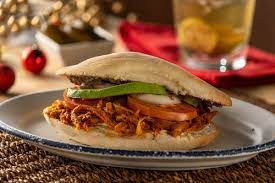

Curso Intensivo de Rubyon Rice
Cómo se hace el lomo adobado para tortas, ¡truco de tortería!

ingredientes
- lomo de cerdo
- cebolla
- ajo
- hoja de laurel
- sal al gusto
Las tortas son de mis platillos favoritos, en especial si son de lomo de cerdo adobado.
La grasita del lomo de cerdo deshebrado, con el adobo ligeramente picante, lo crujiente del bolillo y una porción generosa de aguacate es todo lo que necesitas para ser feliz, mordida a mordida.
Preparación:
- COLOCA en una olla express el lomo de cerdo, la cebolla, el ajo, las hojas de laurel, la pimienta, una pizca de comino y agua hasta que cubra la carne.
- COCE la carne de cerdo en una olla express durante 30 minutos.
- DESHEBRA el lomo de cerdo y reserva únicamente la carne.
- ASA en un comal los chiles, la cebolla, el jitomate y los ajos.
- LICUA todos los ingredientes para el adobo y posteriormente verte sobre una olla.
- HIERVE el adobo y agrega el lomo de cerdo deshebrado. Deja a fuego medio el lomo y rectifica el sazón.
- SIRVE las tortas de lomo adobado con queso y aguacate al gusto.